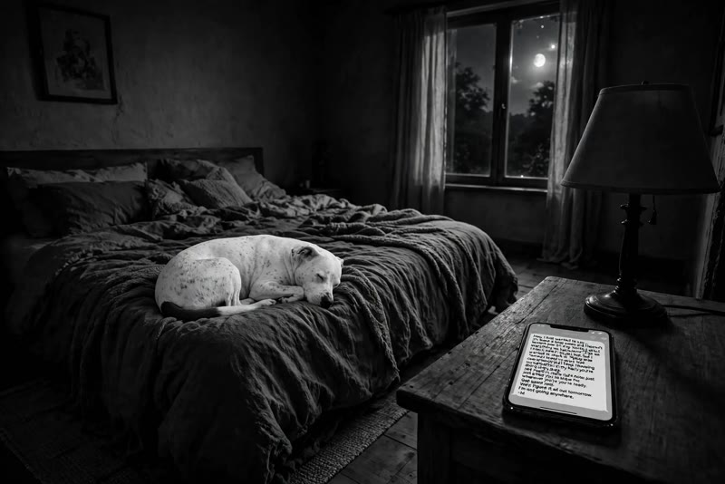

November 22, 2026
Say Nothing, and Mean It
Posted in Reflections
So I watched a video the other day, one of those 37-minute ones with the moody music and a title promising that your silence is "haunting" whoever hurt you, and I'll admit some of it got under my skin in a good way. Some of it didn't. I've been chewing on both halves for about a week, which is how most of these Reflections posts start.
11:52 on a Tuesday
The dog's already asleep at the foot of the bed, doing that little whistle she does through her nose, when the phone lights up on the nightstand.
Long message. Paragraphs.
You know the kind. Somebody has decided that tonight, of all nights, is when they're going to lay out everything that's wrong with you, and they know exactly where the soft spots are because at one point you trusted them enough to show them.
You read it once and your neck gets hot. By the time you hit the bottom you've already got three replies written in your head, and the second one is genuinely mean in a way you'd be a little proud of.
Then you don't send any of them. You flip the phone over, go brush your teeth, turn off the lamp.

I used to think that was weakness, or at least cowardice dressed up as being the bigger person. I don't anymore.
Meanwhile, across town
The person who sent that message is sitting up in bed waiting for you to swing back. They wrote it expecting a fight, and they had their next moves ready, and what they get instead is a read receipt and nothing.
There's research on how much that stings. In 2011 a group of psychologists at the University of Groningen, in the Netherlands, had students watch a six-minute video of three people talking. In one version, the conversation was broken by four seconds of silence. Four. Then the conversation just picks back up like normal. Students who watched the version with the pause came away feeling more rejected and less sure of themselves than the students who saw the version with no pause.
Four seconds did that. You gave this person the whole night.
A second study, out of University College London in 2016, had people play a guessing game where a wrong guess meant a mild shock to the hand. You'd think the worst moments would be when the shock was a sure thing. Nope. People sweated the most, and their pupils got the widest, when the odds were 50/50. A sure shock and a sure miss were both about equally calm. Not knowing was the part that ate at them.
Which is what your quiet hands somebody: a coin they keep flipping in their head. Are they hurt? Are they mad? Are they showing it to people? Are they just... done? Nobody can leave a blank like that alone for long, so they fill it in, usually with the worst version, and usually out of whatever they already suspect about themselves.
What the comeback actually costs you
Think for a second about what that great reply would have bought them. It tells them they got to you, which was the only thing they weren't sure of. It hands over your worst midnight sentence so they can screenshot it, crop out everything around it, and pass it around to whoever will look. It casts you in their story as the angry one, or the unstable one, whatever role they needed filled. And it gives them an ending.
A fight is a lot like a brisket cook. You put a 14-pound packer on the post oak at 6 in the morning and it's smoke and noise and somebody checking the temp every twenty minutes, but by dinner everybody eats and goes home full. Over. Done. Silence never gets pulled off the smoker.
Keep the speech, by the way. It's probably good. Say it to the dog, or to a friend who'll tell you you're right. Just don't hit send.
The part I'm not on board with
That video sold all of this as revenge. Make them suffer, make them sorry, let them rot. I get the appeal (I've had nights where I wanted exactly that), but the same science that makes silence work on a jerk makes it work on people you love, and that's where it turns ugly.
Going quiet on somebody who came at you is a fence. You're protecting your evening.
Going quiet on somebody who loves you, so they'll hurt until they give in, is a fist with the sound turned off.
A lot of us grew up in a house where that happened. Somebody wouldn't talk to somebody for three days, maybe longer, and you'd watch one parent walk past the other in the kitchen like they were a chair. Kids in that house learn that love can go off like a porch light on a timer. Then they spend the next thirty years checking whether it's still on.
With your own people, the rule is different, and it's simple. You're allowed to be too mad to talk. You just have to say it out loud, something like "I can't do this right now, give me an hour, I'll come find you," and then you actually get up an hour later and go find them. A pause with a time on it is fine. The silent treatment isn't. If you're not sure which one you're doing, ask yourself what you want out of it. Want it to stop? Fence. Want them to hurt? Put it down.
Are you quiet, or just watching?
This is the one I fail at, if I'm being honest.
It's easy to stop replying and then spend the next three days checking whether they watched your story, whether they posted some sad song lyric at 1 a.m., whether a mutual friend mentions they've seemed "off." That isn't silence. That's a one-man show with exactly one person in the audience, and you never left the room. You just moved to a different seat.
The real version is a lot less interesting. You didn't answer because the brisket needed wrapping, or the dog needed walking, or you were twenty minutes into a sit and didn't want to break it. You looked at the message, felt the heat drain out of it, and there wasn't anything left to say.
My Buddhist practice keeps beating me over the head with the same idea. A feeling can knock on the door without you inviting it in for dinner. Let it knock. It'll leave.
The goal was never to haunt anybody. It's to stop being haunted yourself.
Six months later
This is usually how it goes. Long after you've quit waiting, a text shows up on some random Thursday. "Hey. Been thinking about you." Or a three-paragraph apology sent at 1:14 in the morning.
You read it over coffee. Something small moves in your chest, maybe, the way weather moves. You might write back something kind. You might not write back at all, and both are honest answers.
The best response I've found to people who tried to hurt me was never a sentence. It was a regular, decent life that didn't have their name in it.
Put the phone down. Go to bed.
Note: I wrote every word of this one myself — AI helped with the editing, and the images are AI-generated illustrations, not photos.
More writing
- November 24, 2026
11 P.M. at Crunch Southpark Meadows
I work out at 11 p.m. seven nights a week. Moving to Austin, every house got measured against one question: how far is the nearest gym that's open at midnight?
- November 21, 2026
The Quiet Kind of Strong
The strongest people I know show up, hold it together in public, then sit in the truck for twenty minutes before going inside.
- November 20, 2026
Why I gave up all my furniture — and why I'll never go back
The movers wanted $14,000–$20,000 to move my furniture from LA to Austin. I gave away 95% of it.
- November 18, 2026
Why I started this site
I retired in January and started learning to build on the web with AI. This site is where I practice.